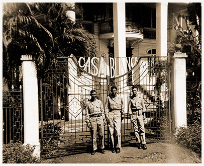

|
j
a v a s c r i p t |
Pg.2/2
February 14, 1945
Red Cross refugee houses on both sides of Nagtahan received food today, but the problem of rationing was proving to be a difficult one when I passed by. At least the authorities seemed anxious to distribute food and were seeking any kind of Neighborhood Association Poll, perfect or not. What a contrast with the Japanese who had almost perfect polls but used the discrepancies to stop distribution. Being a battle zone, American Red Cross activities on the south side are negligible. Elsewhere, the organization is struggling. The best-organized group at the moment is the Chinese Association; the Swiss have only one cardboard sign at Nagtahan while the Spaniards have nothing. The Americans invaded Manga Avenue today just like the Japanese did three years ago. This afternoon two trucks brought MacArthur's belongings to the Casa Blanca, where he once stayed a few nights before evacuating to Bataan. The three vacant houses at the dead end of our street have been occupied; the most looted one was converted into a repair yard of sorts in no time at all.

Army staff at Casa Blanca Gate
A couple of GIs cornered me today with their inquiries about Manila: "Sa-ay, about this, er ... Death March we heard so much about, did all this happen, you know what I mean?" I said that I wasn't in the Death March but my brother Joe undoubtedly was and I still hoped to hear from him some day. The stories were too detailed and gruesome to be exaggerated. ...ooOoo... |
|
|
|
|